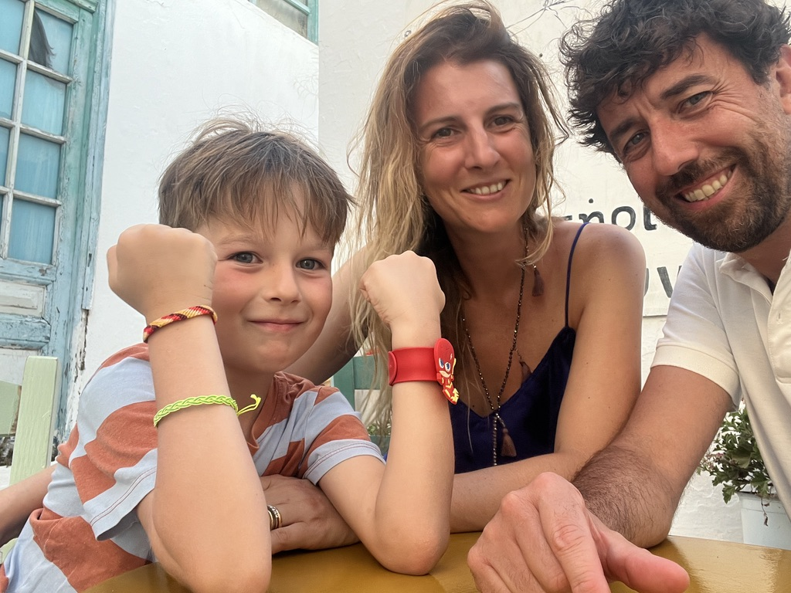
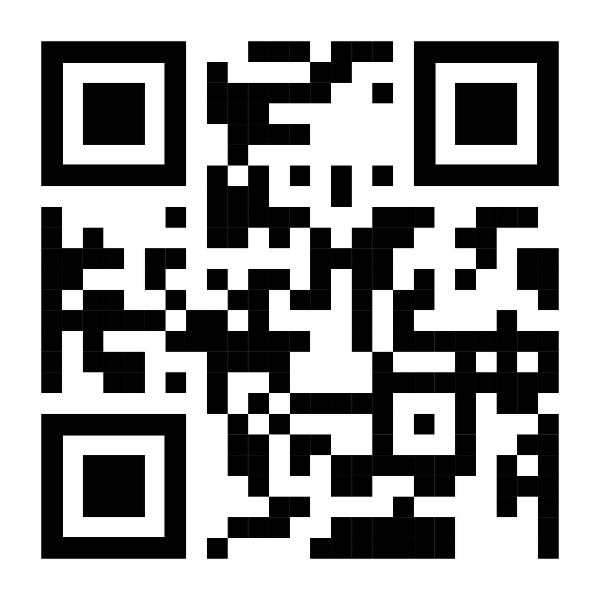
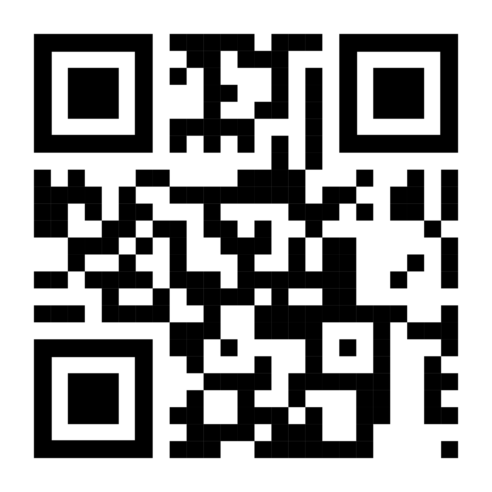
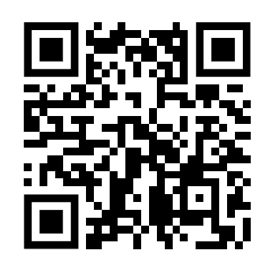
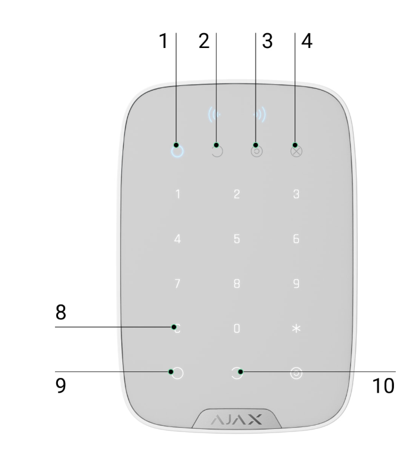
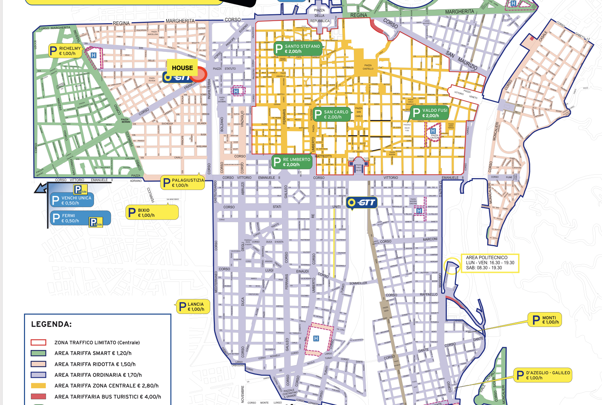

📍 Indirizzo 📍 Address 📍 Adresse
Corso Francia 2 TER, 10143 Torino
8–10 minuti a piedi dalla stazione Torino Porta Susa 8–10 min walk from Torino Porta Susa station 8–10 min à pied de la gare de Torino Porta Susa
Google Maps👨👩👦 Chi siamo 👨👩👦 Who we are 👨👩👦 Qui sommes-nous
Siamo Andrea (48), Bianca (40), Edoardo (7) e il nostro bebè Filippo, nato nel 2025. Abbiamo anche un gatto, Zuki, che potrebbe essere presente durante il soggiorno. We are Andrea (48), Bianca (40), Edoardo (7) and our baby Filippo, born in 2025. We also have a cat, Zuki, who may be around during your stay. Nous sommes Andrea (48), Bianca (40), Edoardo (7) et notre bébé Filippo, né en 2025. Nous avons aussi un chat, Zuki, qui pourrait être présent pendant votre séjour.

📞 Contatti host 📞 Host contacts 📞 Contacts de l'hôte
Non esitate a farci sapere quando siete arrivati e se c'è qualcosa di cui avete bisogno! Feel free to let us know when you arrive and if there's anything you need during your stay! N'hésitez pas à nous faire savoir à votre arrivée et s'il y a quelque chose dont vous avez besoin !
Andrea
Chiama AndreaCall AndreaAppeler Andrea
+39 388 6478786

Inquadrando il QR chiami direttamente Scan QR to call directly Scannez le QR pour appeler directement
Bianca
Chiama BiancaCall BiancaAppeler Bianca
+39 328 3050452

Inquadrando il QR chiami direttamente Scan QR to call directly Scannez le QR pour appeler directement
📶 Wi‑Fi
Potete accedere al Wi‑Fi inquadrando il QR code o inserendo le credenziali manualmente. Access the Wi‑Fi by scanning the QR code or entering credentials manually. Accédez au Wi‑Fi en scannant le code QR ou en saisissant les identifiants manuellement.
SSID: Bonelli_Guest
Password: welcome!

🔑 Accesso, chiavi e antifurto 🔑 Access, keys & alarm 🔑 Accès, clés et alarme
Vi lasceremo un mazzo di chiavi all'ingresso. Se al check‑in non saremo presenti, vi apriremo da remoto. L'antifurto deve essere inserito ogni volta che lasciate l'appartamento incustodito. Prima di attivarlo, assicuratevi che tutte le finestre siano chiuse. We will leave a set of keys at the entrance. If we are not present at check‑in, we will open the door remotely. The alarm must be activated every time you leave the apartment unattended. Before activating, make sure all windows are closed. Nous laisserons un trousseau de clés à l'entrée. Si nous ne sommes pas présents à l'arrivée, nous ouvrirons la porte à distance. L'alarme doit être activée chaque fois que vous quittez l'appartement sans surveillance. Avant l'activation, assurez-vous que toutes les fenêtres sont fermées.
▶ Video: inserire l'antifurto (ON) ▶ Video: activating the alarm (ON) ▶ Vidéo : activer l'alarme (ON)
▶ Video: disinserire l'antifurto (OFF) ▶ Video: deactivating the alarm (OFF) ▶ Vidéo : désactiver l'alarme (OFF)
Procedura antifurto Alarm procedure Procédure d'alarme
- Chiudere la porta. Close the door. Fermez la porte.
- Attivare la tastiera premendo un tasto qualsiasi. Activate the keypad by pressing any button. Activez le clavier en appuyant sur n'importe quelle touche.
- Luce 1 = allarme inserito | Luce 2 = disinserito Light 1 = alarm on | Light 2 = alarm off Voyant 1 = alarme activée | Voyant 2 = désactivée
- Avvicinare il TAG NFC (attaccato alle chiavi) nella zona in alto sopra i numeri. Hold the NFC tag (attached to the keys) near the upper area above the numbers. Approchez le tag NFC (attaché aux clés) de la zone supérieure au-dessus des chiffres.
- Premere 9 per inserire / 10 per disinserire. Press 9 to activate / 10 to deactivate. Appuyez sur 9 pour activer / 10 pour désactiver.
✅ Quando si inserisce l'antifurto, la porta si chiude automaticamente a chiave. ✅ When the alarm activates, the door locks automatically. ✅ Lorsque l'alarme est activée, la porte se verrouille automatiquement.

📋 Regole principali 📋 House rules 📋 Règles de la maison
Speriamo che possiate vivere Torino e la nostra casa con la stessa serenità con cui la viviamo ogni giorno. In casa ci sono tutte le nostre cose: vi faremo spazio per le vostre. Grazie per il rispetto! We hope you'll enjoy Turin and our home with the same comfort we experience every day. The apartment contains all our belongings — we'll make room for yours. Thank you for your care! Nous espérons que vous profiterez de Turin et de notre maison avec la même sérénité que nous y vivons. L'appartement contient toutes nos affaires — nous ferons de la place pour les vôtres. Merci pour votre respect !
🚭 Vietato fumareNo smokingInterdiction de fumer
In appartamento, sui balconi e terrazze — incluse sigarette elettroniche. Solo in strada. Inside, on balconies and terraces — including e-cigarettes. Outside only. À l'intérieur, sur les balcons et terrasses — y compris les cigarettes électroniques. Uniquement dans la rue.
🐾 Animali non ammessiNo petsAnimaux non admis
Non è possibile portare animali domestici in appartamento. Pets are not allowed in the apartment. Les animaux domestiques ne sont pas autorisés.
👟 Scarpe fuoriNo shoes insideChaussures à retirer
Vi chiediamo di non indossare scarpe in casa, per proteggere il parquet. Pantofole o calzini ok. Please remove shoes to protect the parquet. Slippers or socks are welcome. Merci de ne pas porter de chaussures pour protéger le parquet. Chaussons ou chaussettes bienvenus.
🌙 Orari del silenzioQuiet hoursHeures de silence
22:00–7:00 e 13:00–15:00 (riposo dei vicini) 22:00–7:00 and 13:00–15:00 (neighbours' rest) 22h00–7h00 et 13h00–15h00 (repos des voisins)
🪟 Uscendo di casaWhen leavingEn sortant
Chiudere finestre e porte, spegnere luci e climatizzazione, inserire antifurto. Close windows and doors, turn off lights and AC, activate the alarm. Fermer fenêtres et portes, éteindre lumières et clim, activer l'alarme.
🛁 Lenzuola & asciugamaniLinens & towelsDraps & serviettes
Se possibile, portate i vostri. In alternativa: 22 €/set matrimoniale (lenzuola + asciugamani). If possible, bring your own. Otherwise: €22/double set (linens + towels). Si possible, apportez les vôtres. Sinon : 22 €/set double (draps + serviettes).
🍳 Cucina 🍳 Kitchen 🍳 Cuisine
Potete usare le apparecchiature e cucinare. Vi chiediamo attenzione al parquet: soprattutto con olio e fritture usate il tappeto da cucina per proteggere il pavimento dagli schizzi. You are welcome to use all kitchen equipment. Please take care of the parquet floor — use the kitchen mat when frying or using oil to prevent splashes. Vous pouvez utiliser tous les équipements. Veillez au parquet — utilisez le tapis de cuisine lors des fritures pour éviter les éclaboussures.
📺 TV e streaming 📺 TV & streaming 📺 TV & streaming
Potete usare la TV e accedere alle vostre piattaforme streaming personali (Netflix, Amazon, Disney+ ecc.). Vi chiediamo di disconnettervi dai vostri account prima del check-out. You can use the TV and access your personal streaming accounts (Netflix, Amazon, Disney+ etc.). Please log out of your accounts before check-out. Vous pouvez utiliser la TV et accéder à vos plateformes de streaming (Netflix, Amazon, Disney+ etc.). Merci de vous déconnecter de vos comptes avant le départ.
🌡️ Climatizzazione e riscaldamento 🌡️ AC & heating 🌡️ Climatisation & chauffage
La climatizzazione è disponibile solo dal 1 giugno al 31 agosto. Il riscaldamento è centralizzato e non è regolabile individualmente — d'inverno la casa è comunque calda (21–23°C). Air conditioning is available from June 1st to August 31st only. Heating is centrally managed and cannot be individually adjusted — the apartment stays warm in winter (21–23°C). La climatisation est disponible du 1er juin au 31 août uniquement. Le chauffage est collectif et non réglable individuellement — l'appartement reste chaud en hiver (21–23°C).
⚡ Impianto elettrico ⚡ Electrical system ⚡ Système électrique
Se si accendono troppi elettrodomestici (es. phon + forno, o forno + lavatrice) può saltare il contatore nell'armadio vicino all'ingresso. Per riarmarlo: alzare l'interruttore. Poi riaccendere anche il boiler (vedi sotto). If too many appliances run simultaneously (e.g., hairdryer + oven, or oven + washing machine), the fuse in the cupboard near the entrance may trip. To reset: flip the switch up. Then restart the boiler (see below). Si trop d'appareils fonctionnent simultanément (ex. sèche-cheveux + four, ou four + machine à laver), le compteur dans le placard près de l'entrée peut se déclencher. Pour le réinitialiser : relever l'interrupteur. Redémarrer ensuite la chaudière (voir ci-dessous).
🚿 Acqua calda 🚿 Hot water 🚿 Eau chaude
Se va via la corrente, il boiler a gas sul balcone esterno vicino al bagno si spegne. Va riacceso a mano premendo il pulsante ON/OFF. If the power goes out, the gas boiler on the exterior balcony near the bathroom shuts off. Restart it manually by pressing the ON/OFF button. En cas de coupure, la chaudière à gaz sur le balcon extérieur près de la salle de bain s'éteint. Redémarrez-la manuellement en appuyant sur le bouton ON/OFF.
🧺 Lavatrice e asciugatrice 🧺 Washing machine & dryer 🧺 Lave-linge & sèche-linge
Vi chiediamo di non utilizzare questi elettrodomestici, o in caso di necessità di chiederci in anticipo via messaggio. Please do not use these appliances, or ask us in advance via message if needed. Merci de ne pas utiliser ces appareils, ou demandez-nous à l'avance par message si nécessaire.
🗑️ Raccolta differenziata 🗑️ Waste separation 🗑️ Tri des déchets
- Carta / Plastica / Vetro-Lattine / Indifferenziata → contenitore sul balcone vicino alla cucina Paper / Plastic / Glass-Cans / Non-recyclable → bin on the balcony near the kitchen Papier / Plastique / Verre-Canettes / Non recyclable → bac sur le balcon près de la cuisine
- Organico → contenitore sotto il lavello Organic → bin under the sink Organique → bac sous l'évier
Prima del check-out buttate almeno l'organico nei contenitori in strada. All'ingresso troverete la card per aprire i contenitori — lasciatela sempre all'ingresso. Before check-out please dispose of at least the organic waste in the street bins. At the entrance you'll find the card to open the street bins — please always leave it there. Avant le départ, merci de jeter au moins les déchets organiques dans les conteneurs en rue. À l'entrée vous trouverez la carte pour ouvrir les conteneurs — laissez-la toujours à l'entrée.
🧹 Pulizia 🧹 Cleaning 🧹 Nettoyage
Vi chiediamo di lasciare l'appartamento pulito e in ordine come lo avete trovato. Avendo un bambino piccolo, per noi è importante prevedere una pulizia approfondita. In caso di scambi non simultanei, chiediamo un contributo di 50–80 € per la pulizia. Please leave the apartment clean and tidy as you found it. As we have a young baby, a thorough cleaning is important to us. For non-simultaneous exchanges, we ask for a contribution of €50–80 for cleaning. Merci de laisser l'appartement propre et bien rangé comme vous l'avez trouvé. Ayant un jeune bébé, un nettoyage approfondi est important. Pour les échanges non simultanés, nous demandons une contribution de 50–80 €.
⚠️ Danni accidentali ⚠️ Accidental damage ⚠️ Dommages accidentels
Nessuno danneggia le cose intenzionalmente. Se dovesse succedere qualcosa, vi saremmo grati se ci informaste subito: mandate foto e descrizione via WhatsApp o email a andrea.bonelli.ab@icloud.com. No one intentionally damages things — accidents happen. If something breaks, please let us know immediately: send photos and a description via WhatsApp or email to andrea.bonelli.ab@icloud.com. Personne n'endommage intentionnellement les choses — les accidents arrivent. Si quelque chose se casse, merci de nous en informer immédiatement : photos et description via WhatsApp ou email à andrea.bonelli.ab@icloud.com.
🐱 Zuki
Il nostro gatto Zuki potrebbe essere presente durante il soggiorno. Ecco un breve video che mostra dove e come dargli da mangiare. Our cat Zuki may be around during your stay. Here's a short video showing where and how to feed him. Notre chat Zuki pourrait être présent pendant votre séjour. Voici une courte vidéo montrant où et comment le nourrir.
❄️ Aria condizionata ❄️ Air conditioning ❄️ Climatisation
Impianto centralizzato Airzone Airzone central system Système central Airzone
La maggior parte dell'appartamento è climatizzata tramite l'impianto centralizzato Airzone, controllabile dal termostato a muro. Nel video trovate la procedura per accenderlo, spegnerlo e impostare la temperatura nelle varie zone. Ricordatevi che il climatizzatore è utilizzabile solo dal 1 giugno al 31 agosto (vedi sezione "Cucina & casa"). Most of the apartment is air-conditioned via the central Airzone system, controlled from the wall thermostat. The video below shows how to turn it on/off and set the temperature for each zone. Remember the AC can only be used from June 1st to August 31st (see "Kitchen & home" section). La majeure partie de l'appartement est climatisée via le système central Airzone, contrôlé depuis le thermostat mural. La vidéo ci-dessous montre comment l'allumer, l'éteindre et régler la température par zone. La climatisation n'est utilisable que du 1er juin au 31 août (voir section « Cuisine & maison »).
Monosplit in mansarda Mansard mono-split unit Climatiseur mono-split sous les combles
La mansarda è dotata di un climatizzatore monosplit indipendente, con telecomando dedicato (modello standard) che trovate in stanza. Si accende e si regola normalmente: tasto ON/OFF, modalità freddo/caldo (fiocco di neve / sole), e freccette per la temperatura. The attic room has its own independent mono-split AC unit, with a standard remote control located in the room. Use it as usual: ON/OFF button, cooling/heating mode (snowflake / sun icon), and arrows to adjust temperature. La mansarde dispose de son propre climatiseur mono-split indépendant, avec une télécommande standard se trouvant dans la pièce. Utilisation classique : bouton ON/OFF, mode froid/chaud (flocon / soleil), et flèches pour régler la température.
⭐ I nostri posti preferiti ⭐ Our favourite places ⭐ Nos endroits favoris
🏠 Vicino a casa 🏠 Near the apartment 🏠 Près de l'appartement
Tutti a pochi minuti a piedi da Corso Francia 2 TER — perfetti per la vita di tutti i giorni. All just a few minutes' walk from Corso Francia 2 TER — perfect for everyday life. Tous à quelques minutes à pied de Corso Francia 2 TER — parfaits pour le quotidien.
| LocalePlaceLieu | IndirizzoAddressAdresse | NoteNotesNotes |
|---|---|---|
| Carrefour Market | Via S. Donato, 11 | Supermercato 24/7Supermarket 24/7Supermarché 24h/24 |
| FarmaciaPharmacyPharmacie | C.so Francia, 1bis | Lun–Ven 8–21, Sab 9–13 e 15:30–19:30Mon–Fri 8am–9pm, Sat 9am–1pm & 3:30–7:30pmLun–Ven 8h–21h, Sam 9h–13h et 15h30–19h30 |
| Bar Sicily | Via Luigi Cibrario, 17 | Granité sicilianeSicilian granitasGranités siciliens |
| Pastarell | Piazza XVIII Dicembre, 3 | Specialità napoletaneNeapolitan specialtiesSpécialités napolitaines |
| Piano 35 | C.so Inghilterra | Vista panoramica sulla cittàPanoramic city viewVue panoramique sur la ville |
| Pizzeria da Michi | Via S. Donato, 38/G | Pizza al padellino (tipica torinese)Padellino pizza (Turinese style)Pizza padellino (style turinois) |
| Pizzeria Wemà | Via Giustino Fortunato, 4e | Pizza napoletanaNeapolitan pizzaPizza napolitaine |
| Enoteca Parlapà | Corso Principe Eugenio, 17 | Cucina piemontesePiedmontese cuisineCuisine piémontaise |
| Ristorante Cinese | Via Luigi Cibrario, 9 | Anche da asportoTakeaway availableÀ emporter disponible |
| Ristorante Chen Long | Via Principi d'Acaja, 35/H | |
| Alberto Marchetti | Via Principi d'Acaja, 65/D | Una delle migliori gelaterie di TorinoOne of Turin's best gelateriasL'une des meilleures glaceries de Turin |
✨ Per un'occasione speciale ✨ For a special occasion ✨ Pour une occasion spéciale
Qualche indirizzo che amiamo particolarmente a Torino, per un'esperienza un po' più speciale. Vi consigliamo di prenotare con anticipo, soprattutto nei weekend. A few addresses we particularly love in Turin, for a slightly more special experience. We recommend booking in advance, especially on weekends. Quelques adresses que nous aimons particulièrement à Turin, pour une expérience un peu plus spéciale. Nous vous conseillons de réserver à l'avance, surtout le week-end.
Condividere ★★★
Ristorante creativo di alto livello firmato Ferran Adrià (El Bulli) e Federico Zanasi, in un ex stabilimento industriale a Borgo San Paolo. Cucina d'autore, piatti spettacolari e di grande creatività: un'esperienza gastronomica fuori dal comune. A high-end creative restaurant by Ferran Adrià (El Bulli) and Federico Zanasi, set in a former industrial building in Borgo San Paolo. Signature cuisine with spectacular, highly creative dishes — a truly special dining experience. Restaurant créatif haut de gamme signé Ferran Adrià (El Bulli) et Federico Zanasi, dans un ancien site industriel de Borgo San Paolo. Cuisine d'auteur, plats spectaculaires et très créatifs : une expérience gastronomique hors du commun.
💶 Fascia prezzo: alta, menù degustazione ~80–150 € a persona. 💶 Price range: high-end, tasting menus ~€80–150 per person. 💶 Gamme de prix : élevée, menus dégustation ~80–150 € par personne.
📅 Prenotazione obbligatoria e con largo anticipo — è uno dei ristoranti più richiesti di Torino. 📅 Booking required, well in advance — one of Turin's most sought-after restaurants. 📅 Réservation obligatoire et bien à l'avance — l'un des restaurants les plus prisés de Turin.
Google MapsRistorante Consorzio
Cucina piemontese stagionale rivisitata in chiave moderna, vicino al centro storico e alla Mole Antonelliana. Ambiente curato e accogliente, ottima selezione di vini naturali. Seasonal Piedmontese cuisine with a modern twist, near the historic centre and the Mole Antonelliana. Cosy, well-curated atmosphere with a great selection of natural wines. Cuisine piémontaise de saison revisitée de façon moderne, près du centre historique et de la Mole Antonelliana. Cadre soigné et chaleureux, belle sélection de vins naturels.
💶 Fascia prezzo: media, ~35–50 € a persona (escluso vino). 💶 Price range: mid-range, ~€35–50 per person (excluding wine). 💶 Gamme de prix : moyenne, ~35–50 € par personne (vin non compris).
📅 Consigliata la prenotazione, soprattutto la sera e nei weekend. 📅 Booking recommended, especially in the evening and on weekends. 📅 Réservation conseillée, surtout le soir et le week-end.
Google MapsScannabue
Storica trattoria piemontese nel quartiere di San Salvario: piatti classici e tradizionali (vitello tonnato, agnolotti, brasato), porzioni generose e atmosfera conviviale. A historic Piedmontese trattoria in the San Salvario district: classic, traditional dishes (vitello tonnato, agnolotti, braised beef), generous portions and a lively, convivial atmosphere. Trattoria piémontaise historique dans le quartier de San Salvario : plats classiques et traditionnels (vitello tonnato, agnolotti, daube), portions généreuses et ambiance conviviale.
💶 Fascia prezzo: media, ~30–40 € a persona. 💶 Price range: mid-range, ~€30–40 per person. 💶 Gamme de prix : moyenne, ~30–40 € par personne.
📅 Molto frequentato: prenotare con qualche giorno di anticipo, soprattutto nei weekend. 📅 Very popular: book a few days in advance, especially on weekends. 📅 Très fréquenté : réservez quelques jours à l'avance, surtout le week-end.
Google MapsTrattoria Carmen
Piccola trattoria a conduzione familiare in zona San Salvario, cucina casalinga piemontese genuina, prezzi onesti e atmosfera informale e genuina. A small family-run trattoria in San Salvario, serving genuine Piedmontese home cooking at honest prices, in an informal and authentic atmosphere. Petite trattoria familiale dans le quartier de San Salvario, cuisine maison piémontaise authentique, prix honnêtes et ambiance informelle et conviviale.
💶 Fascia prezzo: economica, ~25–35 € a persona. 💶 Price range: budget-friendly, ~€25–35 per person. 💶 Gamme de prix : économique, ~25–35 € par personne.
📅 Locale piccolo: consigliata la prenotazione, specie a cena. 📅 Small venue: booking recommended, especially for dinner. 📅 Petit établissement : réservation conseillée, surtout pour le dîner.
Google Maps✅ Check‑in ✅ Check‑in ✅ Arrivée
Disponibile dalle 18:00 del giorno di arrivo, salvo diversi accordi. Available from 6:00 PM on arrival day, unless otherwise agreed. Disponible à partir de 18h00 le jour d'arrivée, sauf accord contraire.
🚪 Check‑out 🚪 Check‑out 🚪 Départ
Liberate l'appartamento entro le 11:00 del giorno di partenza, salvo diversi accordi. Please vacate the apartment by 11:00 AM on departure day, unless otherwise agreed. Libérez l'appartement avant 11h00 le jour du départ, sauf accord contraire.
Lasciate le chiavi nel contenitore all'entrata o sul tavolo del soggiorno e avvisateci: provvederemo ad inserire l'antifurto da remoto. Leave the keys in the container at the entrance or on the living room table and let us know — we'll activate the alarm remotely. Laissez les clés dans le conteneur à l'entrée ou sur la table du salon et prévenez-nous — nous activerons l'alarme à distance.
🪪 Documenti richiesti dalla legge italiana 🪪 Documents required by Italian law 🪪 Documents requis par la loi italienne
Per adempiere agli obblighi di legge italiani (Art. 109 T.U.L.P.S.) relativi alla comunicazione delle generalità degli ospiti alle autorità di Pubblica Sicurezza, vi chiederemo di inviarci un documento di identità per ciascun ospite tramite WhatsApp, prima del vostro arrivo. To comply with Italian legal requirements (Art. 109 T.U.L.P.S.) on guest registration with the Public Security authorities, we will ask you to send us an identity document for each guest via WhatsApp, before your arrival. Afin de respecter les obligations légales italiennes (Art. 109 T.U.L.P.S.) concernant l'enregistrement des voyageurs auprès des autorités, nous vous demanderons de nous envoyer une pièce d'identité pour chaque invité via WhatsApp, avant votre arrivée.
I dati saranno usati esclusivamente per questo scopo e i documenti saranno cancellati subito dopo l'invio alle autorità. Your data will be used exclusively for this purpose and documents will be deleted immediately after submission to the authorities. Vos données seront utilisées uniquement à cette fin et les documents seront supprimés immédiatement après la transmission aux autorités.
📖 Manuali elettrodomestici 📖 Appliance manuals 📖 Manuels des appareils
Qui trovate i manuali di: aria condizionata, lavastoviglie, macchina del caffè, piano cottura, lavatrice e asciugatrice. Here you'll find manuals for: air conditioning, dishwasher, coffee machine, cooktop, washing machine and dryer. Vous trouverez ici les manuels de : climatisation, lave-vaisselle, machine à café, table de cuisson, machine à laver et sèche-linge.
- 📄 Aria condizionataAir conditioningClimatisation
- 📄 LavastoviglieDishwasherLave-vaisselle
- 📄 Macchina del caffèCoffee machineMachine à café
- 📄 Piano cottura (IT)Cooktop (IT)Table de cuisson (IT) / versione ENEN versionversion EN
- 📄 LavatriceWashing machineMachine à laver
- 📄 AsciugatriceDryerSèche-linge
- 📄 Divano lettoSofa bedCanapé-lit
- 📄 ParcheggiParkingParking
🏙️ Torino
🚗 Arrivare in auto 🚗 Arriving by car 🚗 Arriver en voiture
Parcheggi sotto casa a pagamento lun–sab. Domenica e festivi gratuiti. Tariffe: 1,70 €/h su Corso Francia, 1,50 €/h vie interne. Voucher giornaliero (10–12 €) acquistabile al tabaccaio: C.so Francia 6/D. Parking near the house is paid Mon–Sat. Free on Sundays and public holidays. Rates: €1.70/h on Corso Francia, €1.50/h on side streets. Daily voucher (€10–12) at the tobacconist: C.so Francia 6/D. Parking payant lun–sam. Gratuit le dimanche et les jours fériés. Tarifs : 1,70 €/h sur Corso Francia, 1,50 €/h rues adjacentes. Bon journalier (10–12 €) chez le buraliste : C.so Francia 6/D.
⚠️ Non lasciate oggetti di valore in vista all'interno dell'auto (navigatori, borse, bagagli, ecc.), come in qualsiasi grande città.
⚠️ Do not leave valuables visible inside the car (sat-navs, bags, luggage, etc.), as in any big city.
⚠️ Ne laissez pas d'objets de valeur visibles dans la voiture (GPS, sacs, bagages, etc.), comme dans toute grande ville.
Se la vostra auto ha una targa estera, può essere più soggetta ad attenzioni indesiderate: valutate l'opzione di un parcheggio custodito, soprattutto per soste lunghe o notturne. Alcune opzioni nelle vicinanze:
If your car has a foreign license plate, it may attract more unwanted attention: consider using a guarded car park, especially for long or overnight stays. A few options nearby:
Si votre voiture porte une plaque étrangère, elle peut attirer davantage l'attention : envisagez un parking surveillé, surtout pour les longs séjours ou la nuit. Quelques options à proximité :
- Parcheggio Corso Bolzano – Porta Susa — vicino alla stazione Porta Susanear Porta Susa stationprès de la gare de Porta Susa — apri sitoopen siteouvrir le site
- FS Park Torino Porta Susa — parcheggio della stazione Porta SusaPorta Susa station car parkparking de la gare de Porta Susa — apri sitoopen siteouvrir le site
- Autorimessa Susa — soste giornaliere o settimanali su prenotazionedaily or weekly stays by reservationséjours journaliers ou hebdomadaires sur réservation — apri sitoopen siteouvrir le site
- MyParking Porta Susa — motore di ricerca e prenotazione parcheggi in zonasearch & booking engine for parking in the areamoteur de recherche et réservation de parkings dans le quartier — apri sitoopen siteouvrir le site
Vi consigliamo comunque di verificare disponibilità e tariffe aggiornate su Google Maps prima di partire. We recommend checking current availability and rates on Google Maps before you leave. Nous vous conseillons de vérifier les disponibilités et tarifs actuels sur Google Maps avant votre départ.
🚆 In treno By train En train
Torino Porta Susa a 8–10 minuti a piedi. Torino Porta Susa is 8–10 min on foot. Torino Porta Susa est à 8–10 min à pied.
✈️ In aereo By plane En avion
Dall'aeroporto di Torino Caselle a Porta Susa circa 35–40 minuti. From Torino Caselle airport to Porta Susa approx. 35–40 minutes. De l'aéroport de Torino Caselle à Porta Susa environ 35–40 minutes.

🗺️ Punti di riferimento vicini 🗺️ Nearby places 🗺️ Points de repère à proximité
| ServizioPlaceLieu | IndirizzoAddressAdresse | NoteNotesNotes |
|---|---|---|
| Carrefour Market | Via S. Donato, 11 | Supermercato 24/7 Supermarket 24/7 Supermarché 24h/24 |
| Farmacia Pharmacy Pharmacie | C.so Francia, 1bis | Lun–Ven 8–21, Sab 9–13 e 15:30–19:30 Mon–Fri 8am–9pm, Sat 9am–1pm & 3:30–7:30pm Lun–Ven 8h–21h, Sam 9h–13h et 15h30–19h30 |
| Bar Sicily | Via Luigi Cibrario, 17 | Granité sicilianeSicilian granitasGranités siciliens |
| Pastarell | Piazza XVIII Dicembre, 3 | Specialità napoletaneNeapolitan specialtiesSpécialités napolitaines |
| Piano 35 | C.so Inghilterra | Vista panoramica sulla cittàPanoramic city viewVue panoramique sur la ville |
| Pizzeria da Michi | Via S. Donato, 38/G | Pizza al padellino (tipica torinese)Padellino pizza (Turinese style)Pizza padellino (style turinois) |
| Pizzeria Wemà | Via Giustino Fortunato, 4e | Pizza napoletanaNeapolitan pizzaPizza napolitaine |
| Enoteca Parlapà | Corso Principe Eugenio, 17 | Cucina piemontesePiedmontese cuisineCuisine piémontaise |
| Ristorante CineseChinese RestaurantRestaurant chinois | Via Luigi Cibrario, 9 | Anche da asportoTakeaway availableÀ emporter disponible |
| Ristorante Chen Long | Via Principi d'Acaja, 35/H | |
| Alberto Marchetti | Via Principi d'Acaja, 65/D | Una delle migliori gelaterie di TorinoOne of Turin's best gelateriasL'une des meilleures glaceries de Turin |
Visit Torino IT Visit Torino EN Visit Torino FR Abbonamento Musei